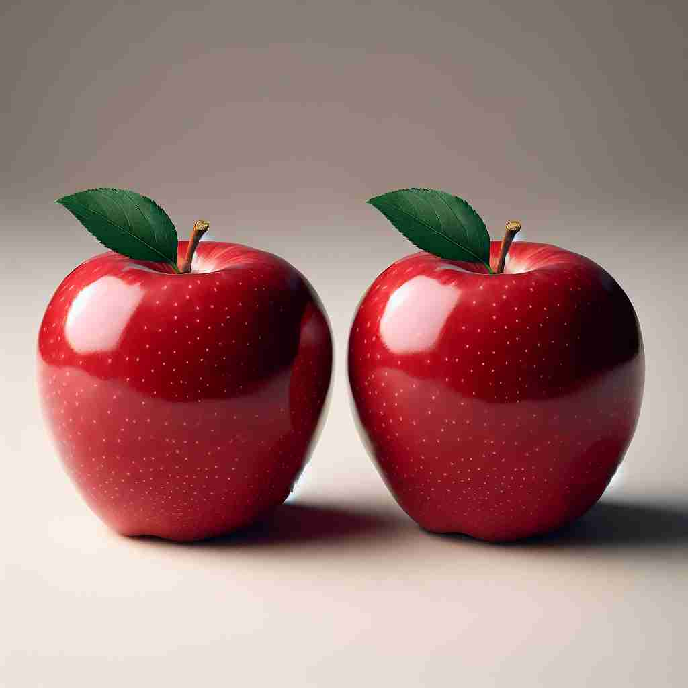

💬 The two girls are wearing the same dress.

💬 Both students received the same score on the test.
💬 They both ordered the same plate of spaghetti.

💬 These are the same apples on the table.
🔈 [seɪm]
🗝️ adj. identical; not different
🖼️ 在一个专业摄影比赛中，两位参赛者同时按下快门，拍摄同样的风景。当他们打印出照片后，惊讶地发现两张照片在构图、光线和色彩上完全相同——正如'same'所表达的那样，无一不同。
🔍 想象两个完全一样的物体放在一起。'same'的核心含义就是描述这种完全相同的状态。从这个核心概念出发，我们可以理解它在表示'未改变'、'相似'、'同一个'等情况下的用法。记住这个'完全相同'的画面，就能轻松掌握'same'的各种用法。
💬 The two girls are wearing the same dress.
💬 Both students received the same score on the test.
💬 They both ordered the same plate of spaghetti.
💬 These are the same apples on the table.
🌳 来自古英语 'same'，没有明显的词根或词缀结构，是一个表示相同的形容词。
💡 记忆 'same' 可以将其与 'similar' 联系起来，两个词都有 'si-' 开头，并且表示相似和相同的概念，从而强化 'same' 是指完全相同。
🗝️ adj. unchanged
🖼️ 在一座老房子里，年长的祖母带着孙女走进她小时候的卧室。一切依旧如旧：墙上的花纹壁纸、窗台上的小瓷人偶，几十年过去了一丝不变。这就是'same'表示未改变的含义。
💬 He's still the same person I met years ago.
❓ 保持完全相同意味着没有变化
🗝️ adj. of one kind; similar
🖼️ 在一个繁忙的市场里，两家摊位并排而立，各自出售鲜艳多汁的苹果。尽管产地不同，但苹果的大小、颜色和味道都极其相似。这种情况下，它们是同一类型的，体现了'same'的类似含义。
💬 We have the same taste in music.
❓ 从完全相同扩展到类似
🗝️ adj. the very one
🖼️ 在一个图书馆里，一名学生寻找一册重要的参考书。经过一番查找，她终于在书架上找到确切的一本，正是她朋友前一天推荐的那本'same'书。
💬 This is the same car I saw yesterday.
❓ 强调是同一个，而不是相似的另一个
🗝️ adv. similarly; in the same way
🖼️ 在一个团队协作的会议上，每个成员都按相同的方式提交了他们的项目进展报告：以电子邮件的形式，遵循统一的模板。这展现了'same'作为'以同样方式'的用法。
💬 You should treat others the same as you want to be treated.
❓ 从形容词含义延伸为副词，表示以相同的方式